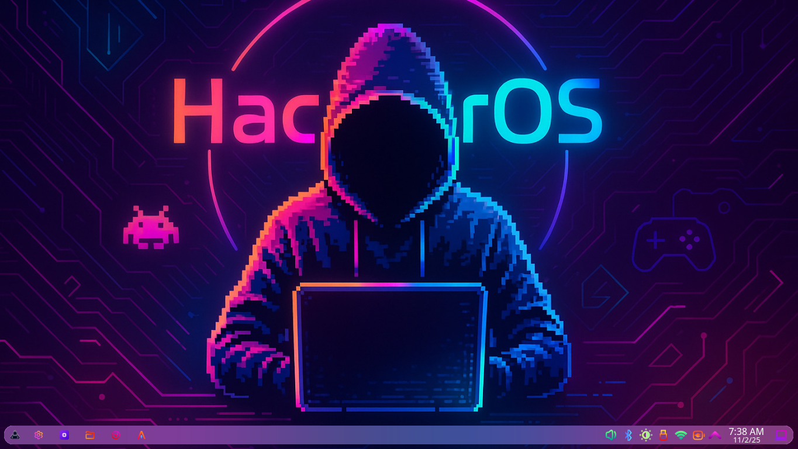
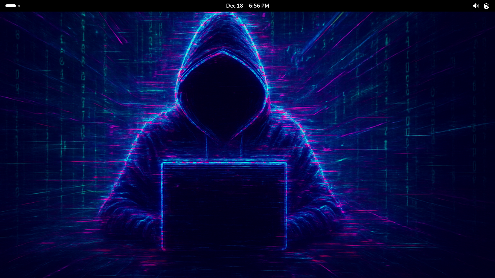
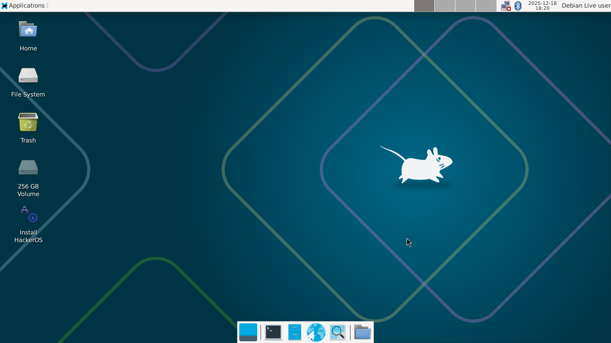
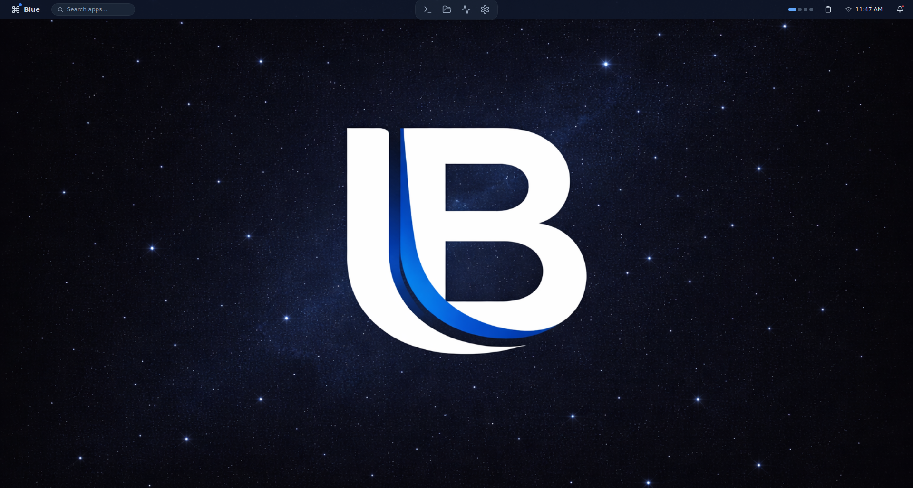

1. Wprowadzenie
HackerOS to dystrybucja linuksowa bazująca na Debianie (testing), stworzona z myślą o:
- zwykłych użytkownikach,
- graczach,
- entuzjastach cyberbezpieczeństwa,
- deweloperach,
- power-userach,
- użytkownikach ceniących stabilność.
Domyślnie HackerOS posiada zwykłe jądro Debiana, chyba że mówimy o edycji gaming, która ma wbudowane w wersji old jądro Liquorix, a w wersji new jądro XanMod LTS.
Filozofia
HackerOS ma dawać użytkownikowi pełną kontrolę, jednocześnie oferując gotowe, przyjazne środowisko do codziennego użytku i grania. Projekt stawia na:
- dostępność (łatwe instalatory i GUI),
- bezpieczeństwo i prywatność użytkownika,
- stabilność (używa zwykłego jądra Debiana, ale można zmienić na customowe za pomocą chker).
Cel
Celem HackerOS jest dostarczyć stabilne środowisko gotowe do pracy i rozrywki:
- stabilność — baza Debian testing (w niektórych edycjach Debian stable),
- prostota aktualizacji — jedną komendą zaktualizuj cały system (
hacker update), - dostosowanie — łatwa personalizacja i integracja narzędzi dla pentesterów i graczy.
2. Wymagania sprzętowe
Minimalne
- Procesor: 2 rdzenie, 1.6 GHz (x86_64 / ARMv8)
- Pamięć RAM: 2 GB
- Dysk: 20 GB wolnej przestrzeni
- Grafika: zintegrowana, obsługa rozdzielczości 1024×768
- Sieć: karta sieciowa Ethernet/Wi-Fi
Te parametry pozwolą uruchomić system; przy nich wydajność GUI i gier będzie ograniczona.
Rekomendowane
- Procesor: 4 rdzenie, 2.5 GHz lub szybszy (x86_64 / ARM64)
- Pamięć RAM: 8 GB lub więcej
- Dysk: 50 GB wolnej przestrzeni (SSD zalecany)
- Grafika: GPU z akceleracją 3D (NVIDIA/AMD/Intel)
- Sieć: stabilne łącze internetowe
Obsługiwane architektury
- x86_64 (amd64) — pełne wsparcie
3. Instalacja
Pobieranie
Pobierz obraz ISO ze strony projektu:
https://hackeros-linux-system.github.io/HackerOS-Website/download.html
Tworzenie bootowalnego nośnika
- Windows: Rufus
- Linux:
dd, balenaEtcher, Fedora Media Writer - Przykład
dd(UWAGA: dobierz poprawne/dev/sdX):
sudo dd if=HackerOS.iso of=/dev/sdX bs=4M status=progress oflag=sync
Instalacja z nośnika
- Uruchom komputer z pendrive/USB.
- Instalator poprowadzi przez: partycjonowanie, tworzenie użytkownika.
- Po zakończeniu uruchom system z dysku.
Dual-boot
- Instalator posiada opcję instalacji obok istniejącego systemu.
- Zawsze wykonaj backup przed zmianami partycji.
- Jeżeli chcesz, by Bootloader (GRUB) był zarządzany ręcznie — wybierz opcję zaawansowaną.
4. Pierwsze kroki po instalacji
Logowanie
- Jeżeli wybrałeś automatyczne logowanie — zostaniesz zalogowany od razu (w instalatorze Calamares).
- W przeciwnym razie: zaloguj się przy użyciu utworzonego użytkownika.
Menedżer pakietów
HackerOS używa APT oraz własnego narzędzia hacker (HackerOS posiada również własnego następcę apt o nazwie lpm):
- APT (przykłady):
sudo apt update
sudo apt upgrade
sudo apt install <pakiet>
sudo apt remove <pakiet>
sudo apt autoremove
sudo apt autoclean
- hacker (własny manager):
sudo hacker install <pakiet>
sudo hacker remove <pakiet>
hacker update
- lpm (własny następca apt):
sudo lpm install <pakiet>
sudo lpm remove <pakiet>
sudo lpm update
sudo lpm upgrade
sudo lpm clean
hacker jest wrapperem i integruje dodatkowe repozytoria/paczki customowe — sprawdź hacker --help.
Instalacja specjalnych jąder (XanMod/Liquorix)
Domyślnie w systemie można zainstalować jądro XanMod czy Liquorix za pomocą narzędzia chker.
Aby zainstalować jądro XanMod lub Liquorix:
- Użyj komendy:
sudo chker xanmodlub dla Liquorix:sudo chker liquorix - Uruchom ponownie komputer.
Czy specjalne jądra dają dużą różnicę wydajności w grach? Zazwyczaj są to niewielkie różnice.
Konfiguracja sieci i podstawowe ustawienia
- GUI: Ustawienia → Sieć
- CLI:
nmtui,nmcli,ip,ifconfig
5. Środowisko graficzne i aplikacje
Domyślne środowisko
KDE Plasma (edycja Official HackerOS), skonfigurowane pod codzienne użytkowanie.
Preinstalowane aplikacje
- Przeglądarka: Vivaldi
- Terminale: Alacritty, Hacker Term (własny terminal)
- Sklep/aplikacje: GNOME Software (lub
software) - Gry i autorskie aplikacje od HackerOS
Instalacja dodatkowego oprogramowania
- Z poziomu GUI: otwórz
Softwarei zainstaluj wybrane aplikacje. - Z CLI:
sudo apt install <pakiet>lubsudo hacker install <pakiet>lubsudo lpm install <pakiet>. - Możesz także instalować za pomocą Flatpak, Snap lub brew.
6. Konfiguracja i personalizacja
Wszystkie ustawienia graficzne i użytkowe znajdziesz w:
- Aplikacja Ustawienia (KDE) — wygląd, motywy, skróty, dźwięki, starupy.
- Dodatkowe pliki konfiguracyjne:
~/.config/,~/.local/share/ - Globalne ustawienia powłoki:
/etc/zshrc. - Komendy
hacker unpacklubhacker pack(do instalacji i usuwania konkretnego oprogramowania lub ich zestawów).
7. Rozwiązywanie błędów (troubleshooting)
- Najpierw sprawdź logi:
- Systemd:
journalctl -b(możesz też sprawdzić logi za pomocąhacker-syslog) - Dmesg:
dmesg | less - X/Wayland logs:
~/.local/share/sddm/lub~/.xsession-errors - Sieć:
nmcli device status,ping 8.8.8.8 - Problem z paczkami:
sudo apt --fix-broken install,sudo dpkg --configure -a - Spróbuj użyć
hacker repair(BETA) - Jeśli nic nie pomaga: napisz mail lub zgłoś issue:
- Email: hackeros068@gmail.com
- Zgłoś issue: https://github.com/HackerOS-Linux-System/HackerOS-Website/issues
- Opisz krok po kroku problem, załącz logi (pastebin/plik), wersję systemu (
hacker info) i konfigurację sprzętową.
8. Licencja i prawa
- HackerOS stosuje mieszankę licencji zależnie od komponentu:
- Jądro i dystrybucyjne komponenty Debiana — zgodne z licencjami oryginalnych pakietów (GPL, itp.).
- Aplikacje i narzędzia customowe od HackerOS:
- domyślnie GNU GPL v3.0 (jeśli wymagasz kompatybilności z GPL dla modyfikacji),
- niektóre narzędzia mogą być pod BSD 3-Clause, MPL-2, MIT, lub Apache License 2.0 (w zależności od autora/komponentu).
- Znak towarowy / nazwa: zastrzeżona przez projekt.
9. Narzędzia i aplikacje
Oto pełna lista autorskich narzędzi i aplikacji HackerOS wraz z opisami i informacjami o instalacji:
| Narzędzie / Aplikacja | Opis | Instalacja / Uwagi |
|---|---|---|
ngt | Narzędzie inspirowane mc (Midnight Commander), napisane w GoLang. | wbudowane we wszystkich edycjach |
hedit | Narzędzie inspirowane nano, napisane w GoLang. | wbudowane we wszystkich edycjach |
hbuild | Narzędzie inspirowane cmake/meson, napisane w Rust. | wbudowane we wszystkich edycjach |
hacker | Główne narzędzie HackerOS (instaluj, usuwaj, napraw system, szybka aktualizacja). | Wbudowane we wszystkich edycjach |
HackerOS-Steam | Uruchom Steam w izolowanym środowisku (kontener). | wbudowane we wszystkich edycjach |
lpm | Własny następca apt (szybszy i zoptymalizowany pod HackerOS). | hacker unpack lpm |
h# | Własny język programowania H# (Język programowania do ogólnego zastosowania w HackerOS). | hacker unpack h# |
vira/bytes | Managery pakietów dla H# (bytes: interpretacja, vira: kompilacja do binarki). | hacker unpack h#-utils |
hl | Język programowania Hacker Lang – następca shella (lub alternatywa). | wbudowany w każdej edycji |
hexai | AI dla HackerOS – lokalny asystent oparty na modelach językowych. | hacker unpack hexai |
hammer | Atomowy manager pakietów (dla edycji Atomic). | Wbudowane tylko w edycji Atomic |
anvil | Narzędzie do zarządzania systemem readonly (dla edycji Atomic). | Wbudowane tylko w edycji Atomic |
isolator | Manager pakietów / nakładka dla distrobox. | Wbudowane w edycji Atomic • w innych: hacker unpack isolator |
Hacker-Mode | Sesja inspirowana gamescope / Steam (tryb gry na pełnym ekranie). | hacker unpack hacker-mode |
bph | Narzędzie CLI edukacyjne do testów penetracyjnych. | Wbudowane tylko w edycji Cybersecurity |
Hacker-Term | Własny terminal HackerOS (z dodatkowymi funkcjami). | Wbudowany w każdej edycji |
HackerOS-App | Aplikacja mobilna dla telefonów Android. | Pobierz APK v0.3 |
hsh | Własna powłoka HackerOS (zastępuje bash/zsh). | Wbudowana w każdej edycji |
hpm (HackerOS Package Manager) | Manager pakietów z repozytorium community. | Wbudowany w każdej edycji |
Hacker Launcher | Aplikacja do uruchamiania gier Windowsowych (Proton). | wbudowane we wszystkich edycjach |
HackerOS-Games | Aplikacja do uruchamiania gier od HackerOS: • StarBlaster • Bit Jump • The Racer • Bark Squadron | wbudowane we wszystkich edycjach |
getit | Połączenie git + wget + własnego systemu pobierania całych katalogów z GitHub/GitLab. | wbudowane we wszystkich edycjach |
chker | Narzędzie CLI do zmiany jądra systemowego (Debian → XanMod lub Liquorix). | wbudowane we wszystkich edycjach |
eiq | Narzędzie do cyberbezpieczeństwa (szyfrowanie w tle). | Tylko w edycji Cybersecurity |
Cybersecurity Mode | Sesja/aplikacja nakładka dla narzędzi cyberbezpieczeństwa (działa w kontenerze). | Tylko w edycji Cybersecurity |
Penetration Mode | Aplikacja z własnymi narzędziami do testów penetracyjnych (tylko do celów edukacyjnych). | Tylko w edycji Cybersecurity |
HackerOS-Store | Sklep HackerOS z programami i dodatkami. | wbudowany we wszystkich edycjach |
HackerOS-Containers | Własny system kontenerów – lekka, zintegrowana platforma do uruchamiania izolowanych środowisk. | hacker unpack hackeros-containers |
HackerOS-Game-Mode | Nakładka optymalizująca system pod kątem grania, wyświetla FPS. | hacker unpack hackeros-game-mode |
dla tych zaawansowanych narzędzi jest specjalna dokumentacja (tutaj)
10. Języki programowania
Hacker Lang
Jest to wydajna alternatywa dla shella z wyjątkową składnią. Hacker Lang ma zarówno własną unikalną składnię, jak i własną powłokę.
Przykład użycia:
> hacker update
Więcej informacji o składni i narzędziach Hacker Lang znajdziesz w oficjalnej dokumentacji Hacker Lang.
H#
HackerOS posiada własny, w pełni zintegrowany z systemem język programowania o nazwie H#. Jego głównym celem (w przyszłości) będzie zastosowanie w ogólnych narzędziach HackerOS (w całym ekosystemie) oraz w ekosystemie HackerOS cybersecurity.
Możliwości uruchomienia:
- Kompilowany – kompilacja zaawansowanych programów w H# do natywnego kodu binarnego.
- Interpretowany (wydajny - JIT) - wydajne uruchomienie programów H# w sposób interpretowany.
- Interpretowany (podgląd) – szybki podgląd efektów dla zaawansowanych programów w H#.
Managerzy pakietów H#:
bytes– manager pakietów pozwala na uruchomienie kodu w sposób wydajny programów w H#.vira– manager pakietów (kompiluje kod do jednej statycznej binarki).
Więcej informacji o składni, narzędziach i ekosystemie H# znajdziesz w oficjalnej dokumentacji H#.
11. Edycje
Edycja Official
Edycja Official to podstawowa wersja dla użytkowników, graczy i programistów – praktycznie dla każdego.
Edycja Hydra

Edycja Hydra to kopia edycji Official, ale z innym wyglądem (Garuda-like).
Edycja GNOME

To samo co edycja Official, ale ze środowiskiem graficznym GNOME.
Edycja XFCE

To samo co edycja Official, ale ze środowiskiem graficznym Xfce.
Edycja Blue (w przyszłości)

HackerOS z autorskim środowiskiem graficznym.
Edycja Gaming (w przyszłości)

Edycja Gaming jest wyposażona w własny instalator oraz inspirowana SteamOS/Bazzite (posiada również tryb gry). Edycja Gaming ma dwa rozgałęzienia: old – przeznaczona dla starszych urządzeń z wbudowanym jądrem Liquorix, oraz New – dla nowszych urządzeń z jądrem XanMod LTS.
Edycja Cybersecurity
Edycja Cybersecurity nie posiada modyfikacji wyglądu. Jest to kopia wersji Official, ale przeznaczona dla entuzjastów cyberbezpieczeństwa (zawiera narzędzia do testów penetracyjnych oraz jądro Xen znane z systemu Qubes OS).
Edycja LTS
Edycja LTS to to samo co edycja Official, ale zamiast Debiana Testing używa Debiana Stable.
Edycja Atomic
Edycja Atomic bazuje na gałęzi Debiana stabilnego lub testowego. Jest okrojona z części narzędzi HackerOS i posiada własne narzędzie do instalacji aktualizacji – hammer. UWAGA: Aktualnie edycja Atomic jest w fazie pre-release. Użyj hammer issue, aby zgłosić błąd.
Edycja NVIDIA
Edycja NVIDIA zawiera wszystko to samo co wersja Official (Debian Testing), ale posiada preinstalowane sterowniki NVIDIA.
Cykl wydawniczy
Standardowe edycje – Official, Cybersecurity oraz NVIDIA – są wydawane co miesiąc (każda wersja).
Edycje poboczne, takie jak GNOME, Hydra i XFCE, ukazują się przy okazji wydań głównych x.0 oraz x.5.
Edycja LTS jest wydawana wyłącznie w wersjach x.0 (co 9 miesięcy każda nowa wersja).
Edycja Atomic nie posiada jeszcze stabilnego harmonogramu wydawniczego – jest w fazie intensywnego rozwoju.
12. Gaming
HackerOS jest świetny do gier dzięki bazie Debian Testing oraz specjalnym narzędziom, takim jak Hacker Launcher (narzędzie do uruchamiania gier .exe za pomocą konkretnych wersji Proton). HackerOS posiada również specjalne edycje, takie jak Gaming Edition i NVIDIA Edition.
Ponadto HackerOS ma własne gry, takie jak Bark Squadron, The Racer, Bit Jump, StarBlaster – możesz je uruchomić za pomocą HackerOS Games.
13. Galeria
Galeria zrzutów ekranu, zdjęć i materiałów wizualnych z HackerOS (edycje, interfejs, gry, narzędzia).
Placeholder – sekcja w budowie. Wkrótce pojawią się tutaj prawdziwe zdjęcia i galerie!